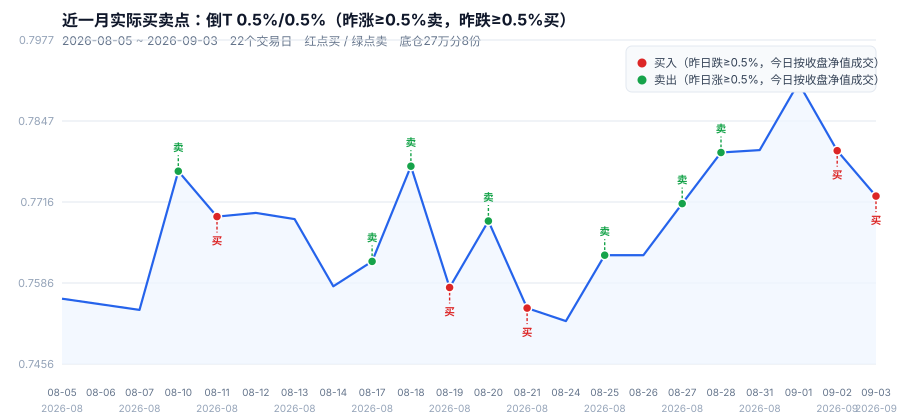
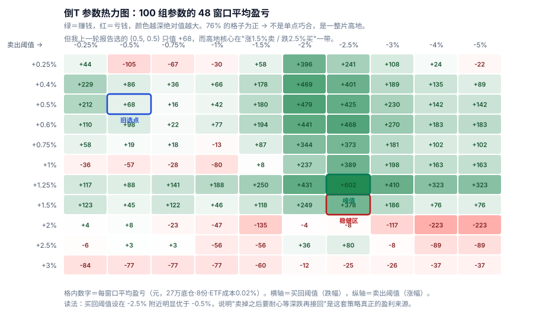
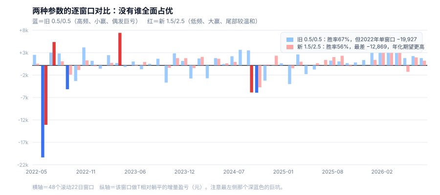

nav_history 全序列 1,065 条 · 含参数稳健性验证这个月做 T 赚了约 1,000 ~ 1,600 元（取决于参数），但这不是重点。
重点是：我把同一套规则放回历史 48 个滚动月窗口做严格检验后，推翻了自己上一版报告的两个结论——
0.5%/0.5% 参数在前半段样本其实是亏的（−612/窗口），全样本为正全靠后半段撑着，不稳健；(0.5, 0.5)：H1 −612 / H2 +747——前半段亏钱。它是被 2023 年之后的震荡市"救"回来的，不是真稳健。
先立基准：窗口起点 2026-08-05 净值 0.7561，终点 2026-09-03 净值 0.7726。躺平不动，27 万 → 275,892 元，赚 5,892 元（+2.18%）。做 T 的收益是这之上的增量。
| 口径 | 已实现价差 | 月末未平仓 | 合计增量 | 成交次数 |
|---|---|---|---|---|
| 倒 T 0.5/0.5 · ETF | +534 | +1,050 | +1,584 | 13 |
| 倒 T 0.5/0.5 · 场外 A 类 | +397 | +1,071 | +1,469 | 13 |
| 倒 T 1.5/2.5 · ETF （稳健参数） | +821 | +207 | +1,028 | 3 |
| 倒 T 1.5/2.5 · 场外 A 类 | +794 | +214 | +1,008 | 3 |
| 正 T 0.5/1.0 · ETF | +1,758 | −340 | +1,418 | 9 |
规则：倒 T = 昨日涨跌达到阈值，今日按收盘净值先卖后买；正 T = 先买后卖。全部用昨收盘决策、今日收盘净值成交——场外基金 15:00 前下单时你并不知道当天净值，任何"今天跌了所以买入"的回测都是偷看答案。
稳健参数这个月只触发 3 次：8/10 卖出 @0.7766、8/18 卖出 @0.7774、8/19 买回 @0.7579。三次操作赚 1,028 元，比高频参数的 13 次操作（+1,584）效率更高，但金额略低。

一个月、几次成交，样本太小。所以我把参数铺开成 10×10 网格，每组都在 48 个滚动窗口上跑一遍。

三个关键读法：
(1.25, 2.5) 的 +602。看到热力图，正常反应是"那就每次挑最好的参数"。我做了滚动前进（walk-forward）检验：每一步只用过去的窗口挑最优参数，然后交易下一个窗口，共 36 个真正的样本外窗口。
| 做法（同一区间：窗口 13~48） | 均值/窗口 | 中位 | 胜率 |
|---|---|---|---|
| 固定用 0.5/0.5，不调参 | +483 | +921 | 69% |
| 每步重新挑历史最优参数 | +174 | +0 | 47% |
这是量化里最常见的自伤：在噪声里挑最大值，挑到的几乎全是噪声。所以对这种薄 edge 的策略，正确做法是固定一个中庸参数，永远不调。
把 48 个窗口按时间对半拆开，只保留前后半段都为正的参数——这是最朴素的样本外检验。
| 参数（卖/买） | H1（2022-05~2024-07） | H2（2024-07~2026-09） | 全样本 | 双半段皆正 |
|---|---|---|---|---|
| (1.50, 2.50) | +230 | +526 | +378 | ✅ 是 |
| (1.25, 2.50) | +145 | +1,059 | +602 | ✅ 是 |
| (1.50, 2.00) | +20 | +479 | +249 | ✅ 是 |
| (1.25, 1.50) | −190 | +690 | +250 | 否 |
| 上轮用的 (0.50, 0.50) | −612 | +747 | +68 | 否 |
| (1.00, 1.00) | −744 | +584 | −80 | 否 |
| (2.00, 3.00) | −175 | −59 | −117 | 否 |
13 组候选里只有 3 组过关。其中 (1.5, 2.5) 的最差半段表现最好（+230），是最保守的选择。

| 指标 | 旧 0.5/0.5（上轮推荐） | 新 1.5/2.5（稳健） | 谁更好 |
|---|---|---|---|
| 均值/窗口 | +68 | +378 | 新（5.5 倍） |
| 中位/窗口 | +921 | +415 | 旧 |
| 胜率 | 67% | 56% | 旧 |
| 最差窗口 | −19,927 | −12,869 | 新（亏得少 35%） |
| 年化期望 | +811（0.30%） | +4,531（1.68%） | 新 |
| 成交频率 | 10.9 次/窗口 | 2.4 次/窗口 | 看偏好 |
| 完全不触发的窗口 | 0 / 48 | 8 / 48 | 旧 |
两者是两种不同风格，没有谁全面占优：
| 年份 | 旧 0.5/0.5 | 新 1.5/2.5 | 行情背景 |
|---|---|---|---|
| 2022 | −16,886 | −8,425 | 猪价暴涨，基金 5→7 月 +22.4%，单边上行 |
| 2023 | +3,449 | +9,171 | 震荡下行 |
| 2024 | −1,837 | −4,867 | 前低后高，"924"行情单月 +28.6% |
| 2025 | −951 | +7,680 | 宽幅震荡 |
| 2026（至 9/3） | +19,470 | +14,566 | 震荡回升，波动密集 |
修正后的三个数字（用稳健参数 1.5/2.5）：
赔付结构依然是"高频小赢 + 低频巨亏"——这类策略最难坚持的地方在于：你会连续十几个月觉得"这方法真好用"，然后在一次猪周期启动时全部吐回去。
take × (eff − lot_px) × (−dir)。早期版本只在 SELL 时配对，导致倒 T 的已实现被算成 0。buy_amount=0 / shares=null，这是策略回放而非实盘对账。给我实际建仓日期和金额，我能算出你真实的持仓成本。data/fund_history.db 表 nav_history，014414 共 1,065 条净值（2022-04-19 ~ 2026-09-03）。t_recent_month.py（单月 56 组）、t_monthly_rolling.py（48 滚动窗口）、t_walk_forward.py（滚动前进 + 100 格热力图）、t_grid_extend.py（扩展网格 + 双半段检验）、t_robust_check.py（稳健参数压力测试）、make_recent_charts.py / make_robust_charts.py（五张图）。全部可复现。